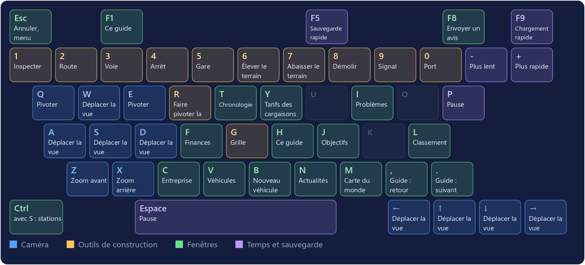

Commandes
Clavier, souris et pavé tactile, sur Windows et sur Mac.
Les touches en couleur font quelque chose. La couleur indique de quel type.


Déplacer la vue
| Souris | Pavé tactile | Clavier | |
|---|---|---|---|
| Déplacer la vue | Glisse avec le bouton droit. Avec Inspecter, le bouton gauche fonctionne aussi. | Fais défiler à deux doigts. | W A S D ou les flèches. |
| Zoom | Tourne la molette. | Pince, ou maintiens Ctrl et fais défiler. | Z et X, ou Page Up et Page Down. |
| Pivoter | Glisse avec le bouton du milieu, ou maintiens Alt et glisse. | Maintiens Alt et fais défiler sur le côté. | Q et E, un quart de tour chacune. |
- La vue défile aussi quand la souris touche le bord de l'écran. Tu peux le désactiver dans Paramètres.
- Tu préfères zoomer en faisant défiler sur un pavé tactile ? Active Défiler à deux doigts zoome dans Paramètres ; Ctrl + défilement déplace alors la vue.
Construire et inspecter
- Bouton gauche : utilise l'outil actuel. Clique pour placer, glisse pour construire des lignes et des zones.
- Clic droit : annule. Le premier clic abandonne le tracé en cours, le suivant range l'outil.
- Esc fait de même, puis ferme la fenêtre du dessus, puis ouvre le menu du jeu.
- R fait pivoter une station, un dépôt ou un aéroport avant de le placer. Avec un outil de pont, il change le style du pont.
- Avec Inspecter, le pointeur devient une main sur tout ce que tu peux ouvrir, et un anneau marque le véhicule qu'un clic ouvrirait. Là où plusieurs choses se superposent, reclique pour passer à la suivante.
- Laisse le pointeur sur un véhicule et son itinéraire s'affiche sur la carte à la couleur de son entreprise, avec les arrêts numérotés dans l'ordre. Il reste visible tant que la fenêtre du véhicule est ouverte.
- O fait défiler les calques de la carte : notes des stations, cargaison en attente, couverture (les maisons et industries qu'atteignent tes stations) et valeur foncière. Le petit bouton de la mini-carte les liste, une légende explique les couleurs, et Esc désactive le calque.
- Le dernier calque, Problèmes, pique une épingle sur tout ce qui figure sur la liste des Problèmes : pointe une épingle pour voir ce qui ne va pas, clique pour l'ouvrir.
- Les ponts, les tunnels, les dépôts, la caténaire, les aéroports, Niveler le terrain et les outils Relier n'ont pas de touche : choisis-les dans leur groupe de la barre d'outils.
- Ctrl+Z annule ta dernière construction et te rend l'argent. Voir Terrain et démolition.
Windows et Mac
Le jeu est le même sur les deux. Seules ces touches changent :
| Windows, Linux | Mac | |
|---|---|---|
| Stations | Ctrl+S | ⌘S |
| Lignes | Ctrl+L | ⌘L |
| Annuler une construction | Ctrl+Z | ⌘Z |
| Sauvegarde rapide | F5 ou Ctrl+Shift+S | ⇧⌘S |
| Chargement rapide | F9 ou Ctrl+Shift+L | ⇧⌘L |
| Plein écran | F11 ou Alt+Enter | ⌃⌘F |
| Envoyer un avis | F8 | fn+F8, ou le menu du jeu |
| Pivoter en glissant | Alt | ⌥ Option |
| Clic droit | Bouton droit | Bouton droit, ou Ctrl + clic |
| Zoomer en faisant défiler sur un pavé tactile | Ctrl | ⌘ Command |
| Chercher un sujet dans ce guide | Ctrl+F | ⌘F |
Temps
- Espace ou P met en pause et reprend. Tu peux construire pendant la pause.
- + et - changent la vitesse : normale, x2, x4, x8. En vitesse normale, une journée dure environ 2 secondes.